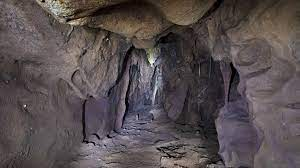
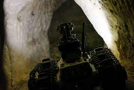

Cave exploration robots are designed to explore and map underground caves that are often too dangerous or difficult for humans to navigate. These robots are equipped with various sensors and tools that enable them to move around and collect data on the cave's topography, geology, and environment.
The data collected by these robots can provide valuable insights into the structure and history of caves, and help scientists and researchers learn more about the Earth's geology, climate, and biodiversity.

Cave exploration robots come in different shapes and sizes, depending on their intended use and the environment they are designed to operate in.
Some robots are small and agile, equipped with wheels or tracks that allow them to move through tight spaces and over rough terrain.
Other robots are larger and more robust, designed to carry heavy equipment and operate in more challenging environments.

One of the key challenges in designing cave exploration robots is to ensure that they can navigate and operate autonomously in remote and challenging environments. This often requires the use of advanced sensing and mapping technologies, such as lidar, sonar, and laser scanning, which allow the robot to create a detailed map of its surroundings and plan its movements accordingly.
Another important consideration in designing cave exploration robots is their power source. Since caves are often remote and inaccessible, the robot must be able to operate for long periods of time without human intervention. This typically involves the use of rechargeable batteries or solar panels, which can provide a reliable and renewable source of power for the robot.
In addition to their scientific applications, cave exploration robots also have potential commercial and industrial uses. For example, they can be used to inspect and map underground infrastructure, such as mines, tunnels, and pipelines, or to search for valuable mineral deposits or natural resources.
Despite their potential benefits, cave exploration robots also present a number of challenges and limitations. For example, they may encounter technical difficulties or malfunctions while exploring the cave, or may face physical obstacles or hazards that prevent them from completing their mission. Additionally, the use of robots in sensitive environments such as caves must be carefully managed to ensure that they do not disturb the natural ecosystem or cause damage to the cave's delicate ecosystem.
Overall, cave exploration robots have the potential to revolutionize our understanding of the Earth's geology and environment, and to provide valuable insights into the history and evolution of our planet. As technology continues to advance, it is likely that we will see even more sophisticated and capable cave exploration robots in the future, with the potential to explore and map even more remote and challenging environments.